Hey! I’m Christian
I am a freelance designer and illustrator quietly working my magic from from a secret bunker in an undisclosed location. With over 15 years in the business, I have managed to have my work featured on The ABC Television Network, 20th Century Fox, Lionsgate, Mashable, BuzzFeed, and many others. I run a small home studio where I design digital user experiences, and create clever art, along with a few other swell goodies. I’m creative by nature but it makes me feel better to say that it’s by choice.
On a personal note
I’m the father of four crazy little kids. They are the foundation of my imagination and the muse for my creativity. They keep me silly and remind me to play because it’s the best way to learn. I enjoy spending long hours staring at color pallets; finding new ways to misuse semi-colons; and Rick Rolling my friends like it’s still 2007. I also like less nerdy stuff like existentialism, quantum physics, infinity, the number zero, and a comfortable armchair with good ass bologna. You know, where your ass sits below your knees. Yes, these are all things that are good. Mmmmm…
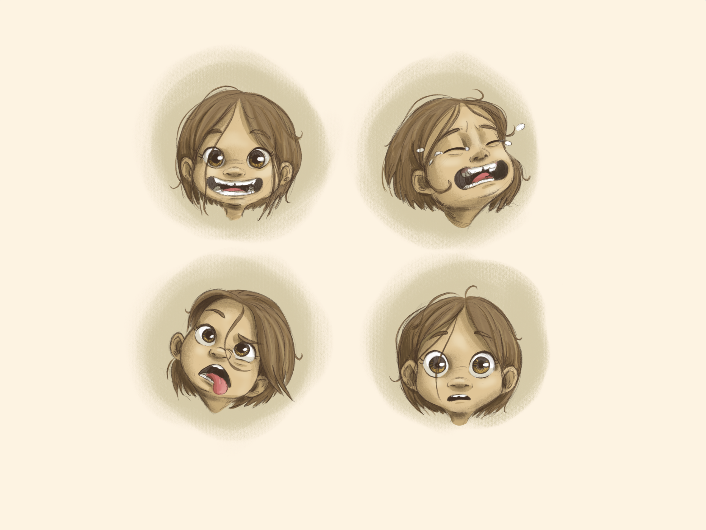
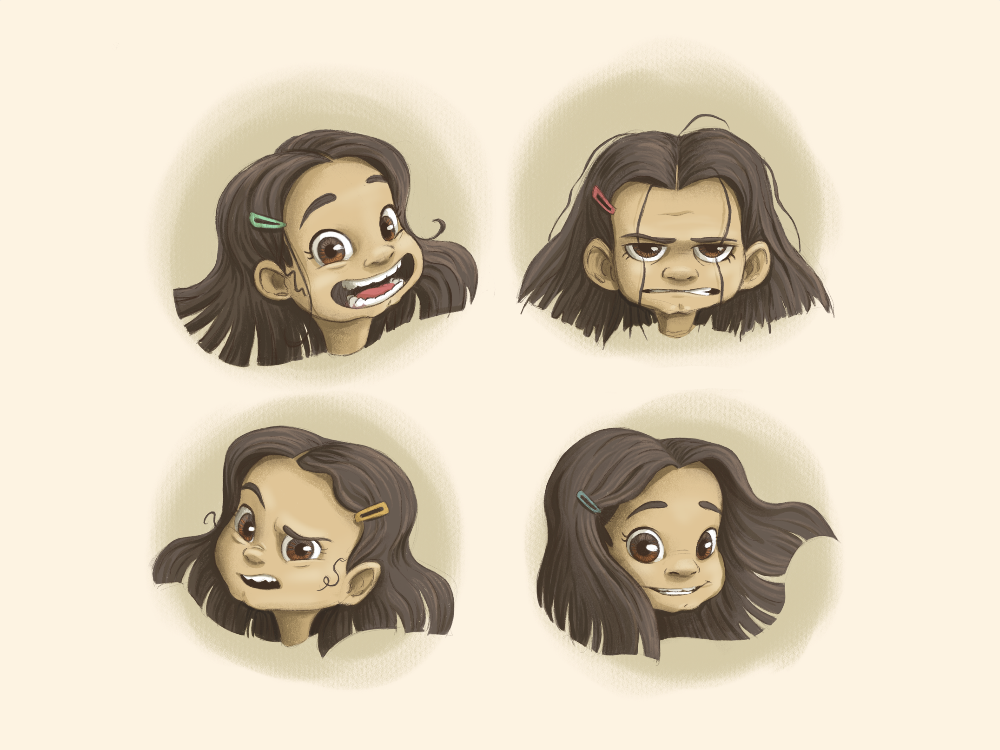
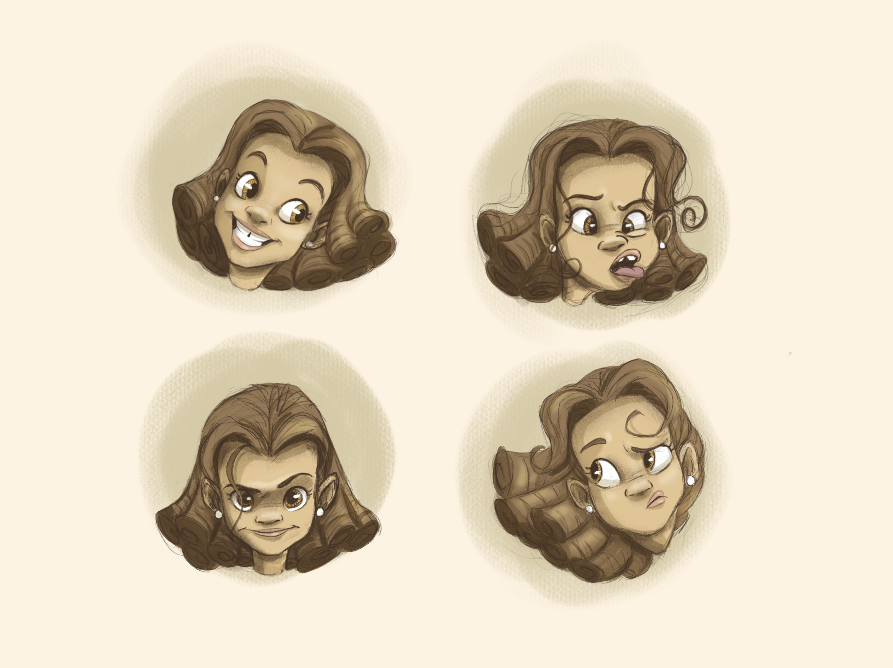
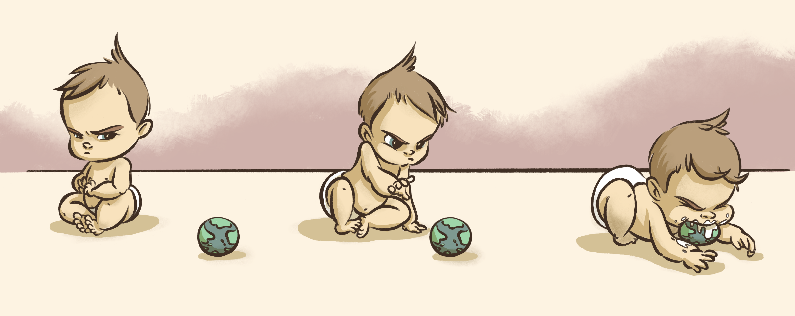
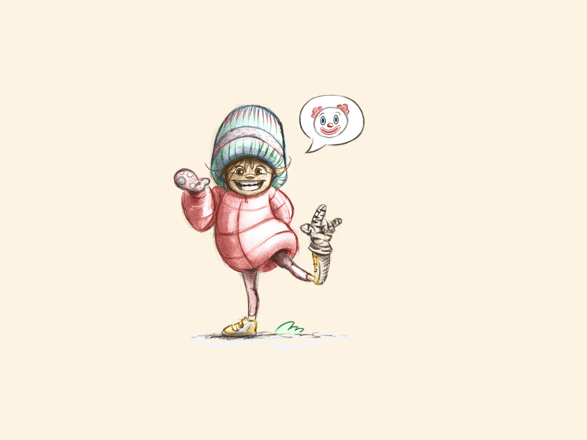
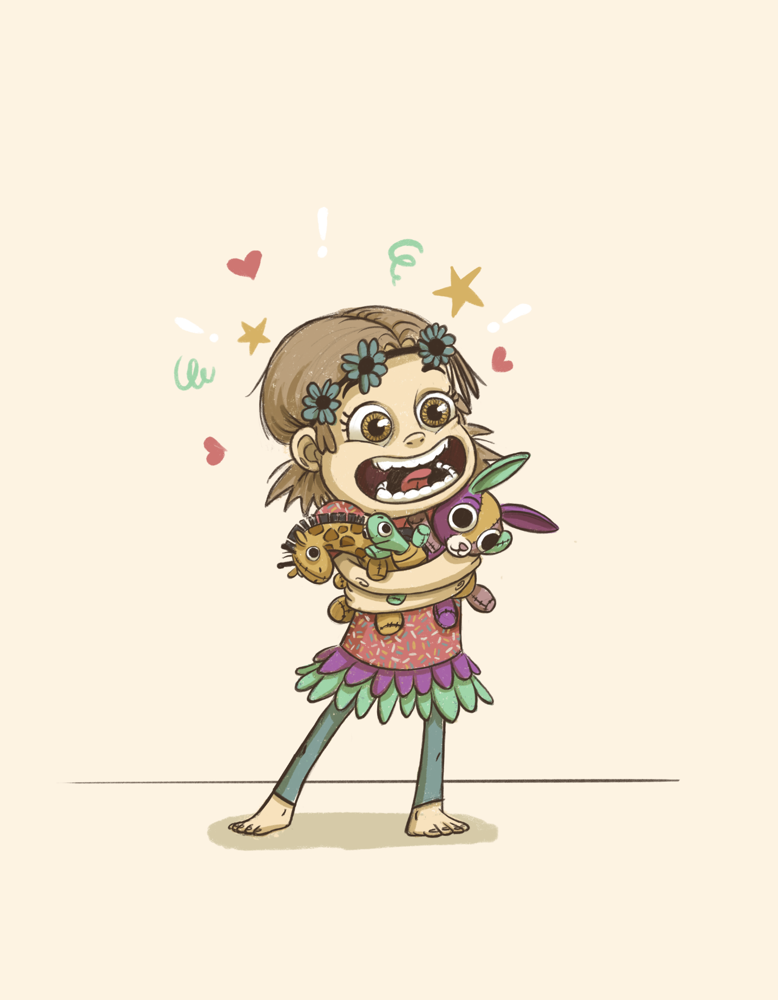
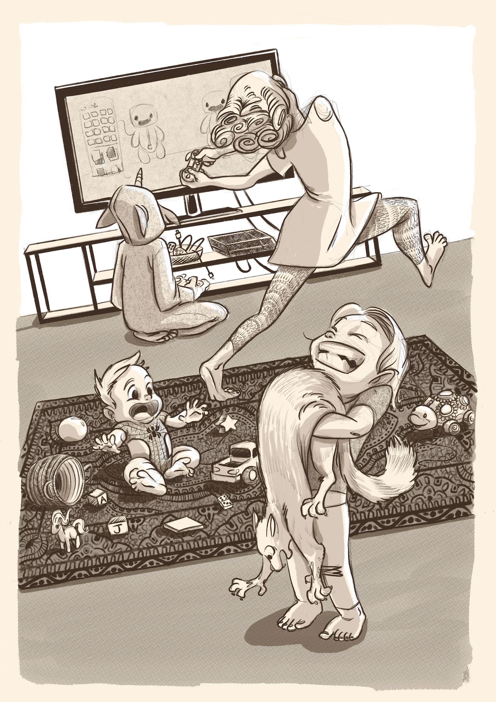
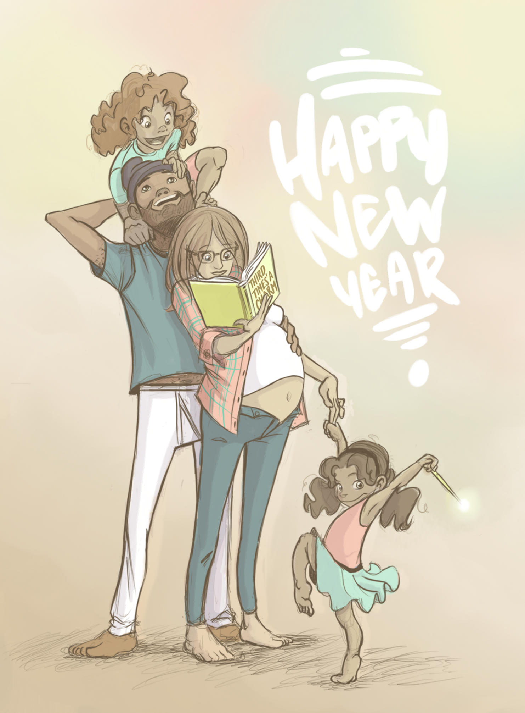
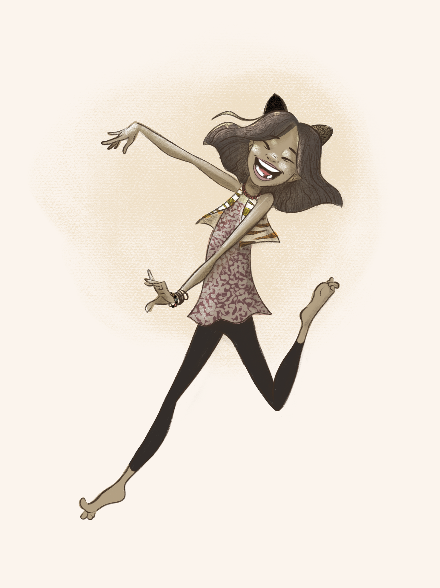
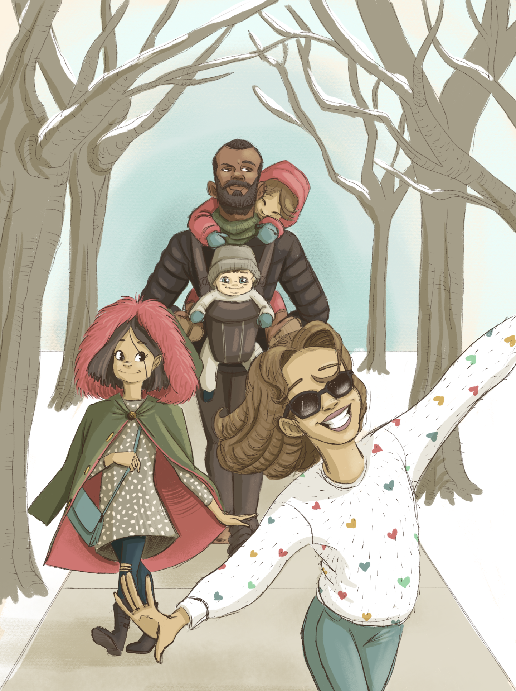
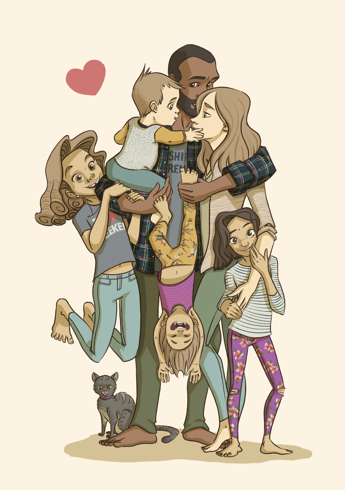
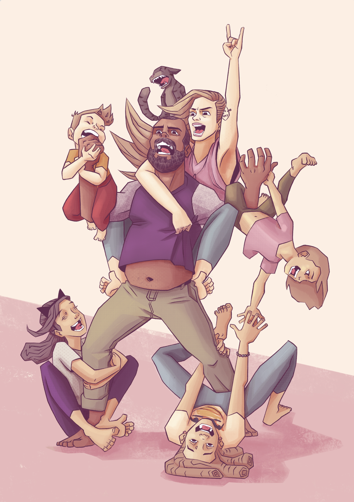
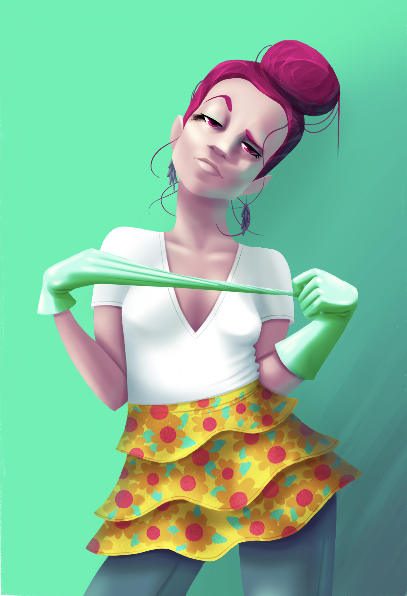